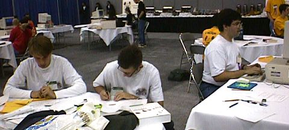
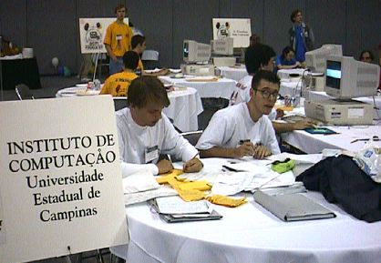

|
Maratona de
Programação novembro de 1996 |
|
|
 1996 - I Consun, Belo Horizonte
1996 - I Consun, Belo Horizonte
Organizado pelos Prof. Claudionor Coelho (DCC-UFMG), Carlos Camarão (DCC-UFMG) e Ricardo Dahab
(IC-Unicamp) ocorreu em 1996 o primeiro CONSUN, um concurso de software e
também uma Maratona de Programação. A iniciativa do evento que ocorreu na UFMG foi do
Softex, com patrocínio do CNPq. Apesar de não ser uma regional oficial do ICPC, o organizador do
evento entrou em contato com a ACM e o vencedor da Maratona de Programação foi
convidado para participar das finais mundiais do ICPC em 1997.
Os três primeiros colocados da competição foram os seguintes:
- IC Unicamp: Alexandre Oliva, Alexandre Volpim e
André Augusto Cesta, técnico Ricardo Anido;
- UnB: Luciano da Silva Coelho, Marcelo Santiago Guedes e Rodrigo Rossi
Fernandes Lima, técnica Maria Elenita Nascimento;
- IME-USP: Aritanan B. Garcia Gruber, Eduardo Teixeira Dias e Paulo José
da Silva e Silva, técnico Carlos E. Ferreira;
O único time brasileiro (e sul-americano)
convidado para as finais mundiais do ICPC foi o
time do IC-Unicamp, formado pelos alunos Alexandre Oliva, Alexandre Volpim e
André Augusto Cesta e pelo técnico Ricardo Anido. As finais ocorreram em 2 de
março de 1997 em San Jose, California. As fotos do time durante a competição:



Last modified: Wed Apr 11 11:18:36 BRT 2018